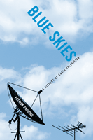

The first comprehensive history of cable television in the United States
The first comprehensive history of cable television in the United States


 The first comprehensive history of cable television in the United States
The first comprehensive history of cable television in the United States

|  |
Blue SkiesA History of Cable TelevisionPatrick R. Parsonscloth EAN: 978-1-59213-287-4 (ISBN: 1592132871) |
"What is new here is the degree of detail and description Parsons gives to the people and events that brought about the evolution of cable television in the United States. The links his book forges between cable pioneers and the chain of events that created the enterprise is fresh material, no longer clouded by speculation and guesswork."
—William R. Davie, Associate Professor of Communication/Broadcast Coordinator, University of Louisiana at Lafayette
Cable television is arguably the dominant mass media technology in the U.S. today. Blue Skies traces its history in detail, depicting the important events and people that shaped its development, from the pre-cursors of cable TV in the 1920s and 1930s to the first community antenna systems in the 1950s, from the creation of the national satellite-distributed cable networks in the 1970s to the current incarnation of "info-structure" that dominates our lives. Author Patrick Parsons also considers the ways that economics, public perception, public policy, entrepreneurial personalities, the social construction of the possibilities of cable, and simple chance all influenced the development of cable TV.
Since the 1960s, one of the pervasive visions of "cable" has been of a ubiquitous, flexible, interactive communications system capable of providing news, information, entertainment, diverse local programming, and even social services. That set of utopian hopes became known as the "Blue Sky" vision of cable television, from which the book takes its title.
Thoroughly documented, carefully researched, yet lively, occasionally humorous, and consistently insightful, Blue Skies is the genealogy of our media society.
"Blue Skies is a major contribution to the field. This is an authoritative manuscript that only a senior scholar such as Patrick Parsons could write. It is a must read for anyone interested in the historical and sociological development of the cable television industry."
—Mike Wirth, Dean, College of Communication and Information, University of Tennessee
"Scholars have long awaited a comprehensive volume on cable television�one with enough detail and explanation to fill in the gaps not only in cable�s own history, but also in its intersection with other media industries. Patrick Parsons does just this in Blue Skies. This is a rich account that begins with important yet little-known precedents in the early twentieth century and extends through the latest technologies. Particularly remarkable about Blue Skies are the conceptual frames Parsons incorporates throughout, making accessible to the reader what otherwise might seem like arcane historical details."
—Megan Mullen, Department of Communication, University of Wisconsin-Parkside
"Blue Skies, a definitive history of cable television is an extraordinary achievement. Masterfully researched and impressively thorough, Parsons weaves the complex details of cable television�s evolution into a lively narrative that provides insights into the industry itself and, more generally, into the relations of media to society."
—Thomas Streeter, Department of Sociology, University of Vermont
"Parsons' book reads as a multidimensional narrative of the story of broadcasting, almost as a 'biography' that provides insight into the people and circumstances surrounding the development of cable television. This approach substantiates the view that technologies are not autonomous, deterministic agents but are developed by people through knowledge, skill, opportunity, and sometimes luck."
—Sandy Kyrish, Temple University
"[N]o one has written as compellingly about [cable TV] than Patrick Parsons in his definitive work on the cable industry, Blue Skies�. With a sweeping narrative, replete with detail and explanation, Blue Skies illuminates the complex history of the industry that redefined mass communication in American society."
—Television Quarterly
"Patrick Parsons has written a superb, comprehensive history of cable TV in the United States. Blue Skies is a must read for media historians or anyone else curious about the origins of the local 'cable company.'... Blue Skies is well researched, rich in detail, and told by someone who obviously has been a longtime observer of this industry. He not only knows his subject well, he also has an instinct for telling a good story. Parsons has woven the multilayered history of cable's development into a remarkably workable (and readable) whole.... Simply put, Blue Skies is one of the most important media history books to come along in many years. It should occupy a special place in every media historian's library."
—The Journal of American History
"Patrick Parsons has filled a gap in the history of technology with his comprehensive account of the U.S. cable-television industry from its inceptions through 2005....One of the book's strengths is its exploration of antecedent technologies and regulatory frameworks that served as models in shaping beliefs about cable's place in the industrial, cultural, and political landscape.... Parsons has written a definitive history of cable TV."
—Business History Review
"This book fills a long-time need. It provides the definitive history of the medium on which well over two-thirds of American households rely for their television reception (and many for Internet as well)....His study is balanced in two important ways. He demonstrates both the benefits and some of the drawbacks of cable over the decades, and he melds the roles of technology (e.g., coaxial cable, satellites); regulation; large and small companies and their business decisions; and (in recent years) competition in the overall development of cable television. The result is an important first�the long-awaited comprehensive history of what is now a central industry in America, if not a universally admired one. We learn from Parson�s efforts just why this is so, along with a sense of what may happen in years to come."
— Enterprise and Society
Preface
1. The Evolution of a Revolution (Origins-1930s)
2. Pioneering Efforts (1930s-1952)
3. Mom 'n' Pop Business (1951-1958)
4. Abel Cabel Goes to Washington (1950-1960)
5. Cable's New Frontier (1960-1966)
6. The Wired Nation (1966-1972)
7. The Cable Fable (1972-1975)
8. The Phoenix (1975-1980)
9. Cablemania (1980-1984)
10. The Cable Boom (1985-1992)
11. The Cable Cosa Nostra (1986-1992)
12. 500 Channels (1992-1996)
13. "What's Gonna Be Next?" (1997-2005)
Appendices
Notes
Index
Patrick R. Parsons is Don Davis Professor of Ethics, College of Communications, Penn State University. He is the co-author (with Robert Frieden) of The Cable and Satellite Television Industry. He is also the author of Cable Television and the First Amendment and co-editor (with Steve Knowlton) of The Journalist's Moral Compass.
Mass Media and Communications
American Studies
Business/Economics
© 2015 Temple University. All Rights Reserved. This page: http://www.temple.edu/tempress/titles/1701_reg.html.